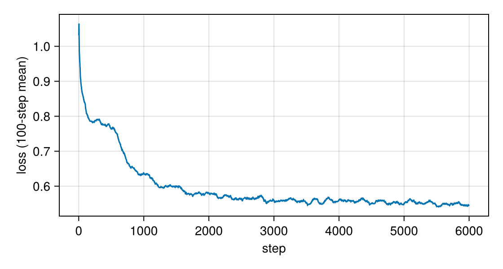
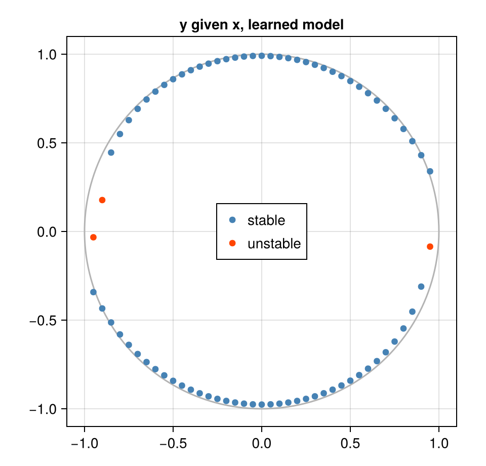

Train a small diffusion model, use it as a relation
Download as a Jupyter notebook
The first tutorial used a noise predictor known in closed form. Here the same relation is learned from samples, by a small multilayer perceptron, and then used exactly as before. The last part differentiates the answer of a query with respect to the input and the network weights, through the solver, by the implicit function theorem.
The network has about five thousand parameters. That is the scale this package is meant for: a diffusion model over the few coordinates of one relation, not an image model.
using VariationalDiffusion, Lux, LuxCore, Random, LinearAlgebra, Optimisers, Printf
using DifferentiationInterface, Zygote
using CairoMakieThe network
$\varepsilon_\theta(z, t)$ takes a point $z \in \mathbb R^2$ and a noise level $t$, here encoded by a few sine and cosine features. Any Lux model works; input adapts the pair $(z, t)$ to what the model expects.
const sched = VPSDE()
const FREQ = [0.5, 1.0, 2.0, 4.0, 8.0]
embed(t) = vcat(sin.((2π .* t) .* FREQ), cos.((2π .* t) .* FREQ)) # t scalar or a 1×B row
input(z, t) = vcat(z, embed(t) .* ones(eltype(z), 1, size(z, 2)))
net = Chain(Dense(12 => 64, swish), Dense(64 => 64, swish), Dense(64 => 2))
Lux.parameterlength(net)5122Training: denoising score matching
Take a data point $z_0$, a noise level $t$ and noise $\varepsilon$, form $z_t = \alpha_t z_0 + \sigma_t \varepsilon$, and train the network to predict $\varepsilon$ from $(z_t, t)$. This is the standard diffusion-model loss (Ho et al., 2020), equivalent to denoising score matching (Vincent, 2011). One deviation from image diffusion: the implicit learner only reads the model at small noise levels, so we train on $t \in [0.001, 0.2]$ instead of $[0, 1]$.
function batch(rng, B)
θ = 2π .* rand(rng, B)
z₀ = vcat(cos.(θ)', sin.(θ)') .+ 0.02 .* randn(rng, 2, B) # noisy circle samples
t = 1e-3 .+ 0.2 .* rand(rng, 1, B)
ε = randn(rng, 2, B)
zₜ = alpha.(Ref(sched), t) .* z₀ .+ sigma.(Ref(sched), t) .* ε
return (Float32.(vcat(zₜ, embed(t))), Float32.(ε))
end
function train(rng; steps = 6000)
ps, st = Lux.setup(rng, net)
ts = Training.TrainState(net, ps, st, Optimisers.Adam(1.0f-3))
losses = Float64[]
for k in 1:steps
_, loss, _, ts = Training.single_train_step!(AutoZygote(), MSELoss(), batch(rng, 256), ts)
push!(losses, loss)
end
return ts.parameters, ts.states, losses
end
ps, st, losses = train(Xoshiro(0))
f64(x::AbstractArray) = Float64.(x); f64(x::NamedTuple) = map(f64, x); f64(x) = x
ps = f64(ps) # inference runs in Float64The loss does not go to zero, and should not: at small $t$ the noise is barely distinguishable from the circle's own thickness, so part of it is unpredictable.
smooth = [sum(losses[max(1, i - 99):i]) / length(max(1, i - 99):i) for i in eachindex(losses)]
fig = Figure(size = (560, 300))
ax = Axis(fig[1, 1]; xlabel = "step", ylabel = "loss (100-step mean)")
lines!(ax, smooth)
fig
The trained network as a relation
Wrap the network as a NoisePredictor and build the implicit learner. The ad argument names the automatic-differentiation backend used later for the backward pass; any ADTypes backend works (Zygote, Enzyme, ForwardDiff, Mooncake, or Reactant for compiled code).
pred = NoisePredictor(net, sched; input, ad = AutoZygote())
m = ImplicitDiffusion(pred, field_nodes(Xoshiro(1), 2; samples = 8))The queries are the same as for the closed-form model. Both branches are found, and every answer comes with a stable flag:
for (x, y₀) in ((0.6, 0.5), (0.6, -0.5), (0.0, 0.7), (-0.9, 0.2))
sol, _ = implicit_infer(m, [x, y₀], [Inf, 0.0], ps, st)
@printf "x = %+.1f, start y = %+.1f → y = %+.4f radius %.4f stable %s\n" x y₀ sol.z[2] norm(sol.z) sol.stable
endx = +0.6, start y = +0.5 → y = +0.7800 radius 0.9840 stable true
x = +0.6, start y = -0.5 → y = -0.7736 radius 0.9790 stable true
x = +0.0, start y = +0.7 → y = +0.9909 radius 0.9909 stable true
x = -0.9, start y = +0.2 → y = +0.1787 radius 0.9176 stable false
The last query is the interesting one. Near $x = \pm 1$ the two branches $y = \pm\sqrt{1-x^2}$ approach each other and meet at the tangent point. The learned density is smoothed, so there the two ridges merge, and between them sits a saddle. Started at $y = 0.2$, the solver converged to that saddle: a root of the field, but not a minimum of the energy, and stable = false says so. A caller should treat an unstable answer as "no reliable answer from this start" and retry from elsewhere.
Over the whole circle: clamp $x$ at many values, start once above and once below the axis, and plot the answers, unstable ones in red.
xs = range(-0.95, 0.95; length = 39)
answers = [first(implicit_infer(m, [x, s * 0.5], [Inf, 0.0], ps, st)) for x in xs for s in (1, -1)]
ok = [a.stable for a in answers]
fig = Figure(size = (480, 460))
ax = Axis(fig[1, 1]; aspect = DataAspect(), title = "y given x, learned model")
lines!(ax, cos.(range(0, 2π; length = 200)), sin.(range(0, 2π; length = 200)); color = :gray70)
scatter!(ax, [a.z[1] for a in answers[ok]], [a.z[2] for a in answers[ok]]; color = :steelblue, label = "stable")
scatter!(ax, [a.z[1] for a in answers[.!ok]], [a.z[2] for a in answers[.!ok]]; color = :orangered, label = "unstable")
axislegend(ax; position = :cc)
fig
Away from the tangent points the answers lie on the circle, about 2% inside it (the smoothing bias). Close to $x = \pm 1$ they are pulled inwards, where the smoothed branches merge. Finer noise levels in field_nodes sharpen this, at the price of a steeper, harder field.
Differentiating through inference
Suppose a downstream loss depends on the answer, say $\ell = (y^\star - 0.7)^2/2$. Its derivative with respect to the clamped input $x$ or to a network weight has to go through the solver. Unrolling the Newton iterations would work but costs memory and is fragile. Instead, implicit_pullback uses the implicit function theorem: at a root, one linear solve with the transposed Jacobian gives every derivative at once, as in deep equilibrium models (Bai et al., 2019).
sol, _ = implicit_infer(m, [0.6, 0.5], [Inf, 0.0], ps, st; tol = 1e-12)
ȳ = [0.0, sol.z[2] - 0.7] # ∂ℓ/∂z*
b = implicit_pullback(m, sol, [0.6, 0.5], [Inf, 0.0], ȳ, ps, st)
keys(b)(:z₀, :ρ, :ps)b.z₀ is the derivative with respect to the query (here: the clamped $x$), b.ps with respect to the network weights, b.ρ with respect to the precisions. A check against finite differences, which re-run the whole solve:
ℓ(z) = (z[2] - 0.7)^2 / 2
solve(x, ps) = first(implicit_infer(m, [x, 0.5], [Inf, 0.0], ps, st; tol = 1e-12)).z
h = 1e-6
fd_x = (ℓ(solve(0.6 + h, ps)) - ℓ(solve(0.6 - h, ps))) / 2h
bump(δ) = (W = copy(ps.layer_2.weight); W[5] += δ; merge(ps, (layer_2 = (weight = W, bias = ps.layer_2.bias),)))
fd_w = (ℓ(solve(0.6, bump(h))) - ℓ(solve(0.6, bump(-h)))) / 2h
(adjoint_x = b.z₀[1], fd_x = fd_x, adjoint_w = b.ps.layer_2.weight[5], fd_w = fd_w)(adjoint_x = -0.06190556487904721, fd_x = -0.06190556488044549, adjoint_w = -5.051914935139818e-6, fd_w = -5.05191439896524e-6)The adjoint gives the derivative for all weights from one linear solve; finite differences needed two full solves per weight. This is what makes it possible to train a relation through its own inference, for instance to fine-tune it for a task loss.
What to read next
- Robot arm: one model, every direction applies the same steps to a four-dimensional problem with a real application.
- The derivation of the adjoint: Backpropagation through Implicit Inference.
References
- Bai, S.; Kolter, J. Z. and Koltun, V. (2019). Deep Equilibrium Models. In: Advances in Neural Information Processing Systems (NeurIPS), arXiv:1909.01377.
- Ho, J.; Jain, A. and Abbeel, P. (2020). Denoising Diffusion Probabilistic Models. In: Advances in Neural Information Processing Systems (NeurIPS), arXiv:2006.11239.
- Vincent, P. (2011). A Connection Between Score Matching and Denoising Autoencoders. Neural Computation 23, 1661–1674.
This page was generated using Literate.jl.